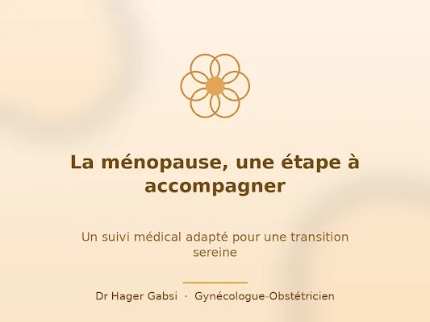
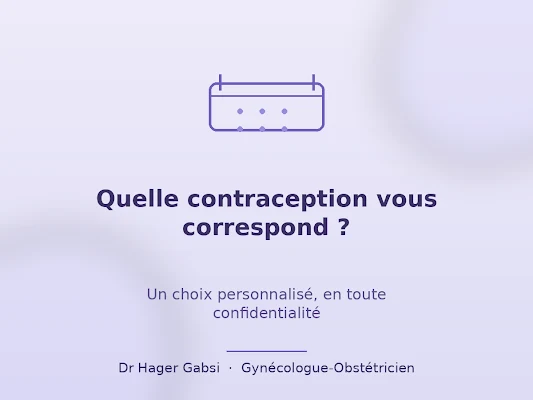
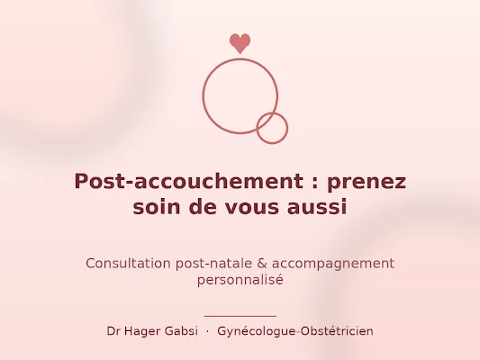
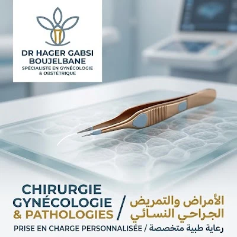

Menopause in L’Aouina: preparing for a consultation
Hot flushes, sleep and cycle changes: a visit to discuss your concerns.
Read article →Women’s health information adapted from the practice’s posts in L’Aouina, Tunis.

Hot flushes, sleep and cycle changes: a visit to discuss your concerns.
Read article →
A confidential consultation to discuss methods and your needs.
Read article →
Time to discuss recovery and your questions after birth.
Read article →
Describe symptoms to discuss examinations and care.
Read article →The doctor’s research publications are presented separately.
Scientific publications